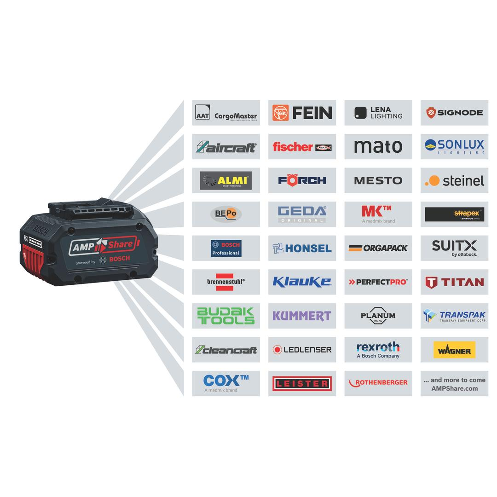

06019M50L0

| Noise level |
The A-rated noise level of the power tool is typically as follows: Sound pressure level 99 dB(A); Sound power level 107 dB(A). Uncertainty K= 3 dB. |
| Tool dimensions (width) |
73 mm |
| Tool dimensions (length) |
141 mm |
| Tool dimensions (height) |
210 mm |
| No-load speed |
0-1,200 rpm |
| Battery voltage |
18.0 V |
| Tool holder |
1/2" square friction ring and thru hole |
| Breakaway torque, max. |
560 Nm |
| Torque adjustment range, min./max., 1st level |
0/85 Nm |
| Torque adjustment range, min./max., 2nd level |
0/200 Nm |
| Torque adjustment range, min./max., 3rd level |
0/350 Nm |
| No-load speed (1st level) |
0-1,200 rpm |
| No-load speed (2nd level) |
0-1,700 rpm |
| No-load speed (3rd level) |
0-2,300 rpm |
| Torque settings |
3 |
| Weight excl. battery |
1.1 kg |
| Torque, max. |
350 Nm |
| Impact rate |
0-3,400 bpm |
| Impact rate (1st level) |
0-1,800 bpm |
| Impact rate (2nd level) |
0-2,600 bpm |
| Impact rate (3rd level) |
0-3,400 bpm |
| Bold size |
M 10 – M 18 |
| BITURBO |
No |
Small size. Big impact. The cordless impact wrench for PRO bolting
While you enjoy the convenience of small tools that you can carry around, ultimately, their limited power loses you time. With the Bosch GDS 18V-350, you get an intuitive impact wrench with a brushless motor that is compact and highly efficient. It has a small head size of 131 mm and a slim, soft-grip handle, so you’ll find it easy to use even in tight spaces. Select from three different torque levels and switch up output from 85 Nm to 200 Nm to a high 350 Nm torque to tackle different bolt sizes or rusted bolts while avoiding damage.
If you're in metal fabrication, HVAC, scaffolding, or auto repair, this is your handy tool of choice. You’ll effortlessly drive bolts into threads. This impact wrench also tackles challenging jobs, such as attaching machined screws.